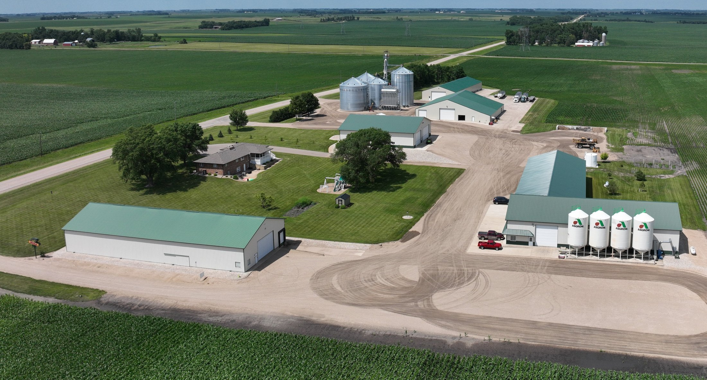
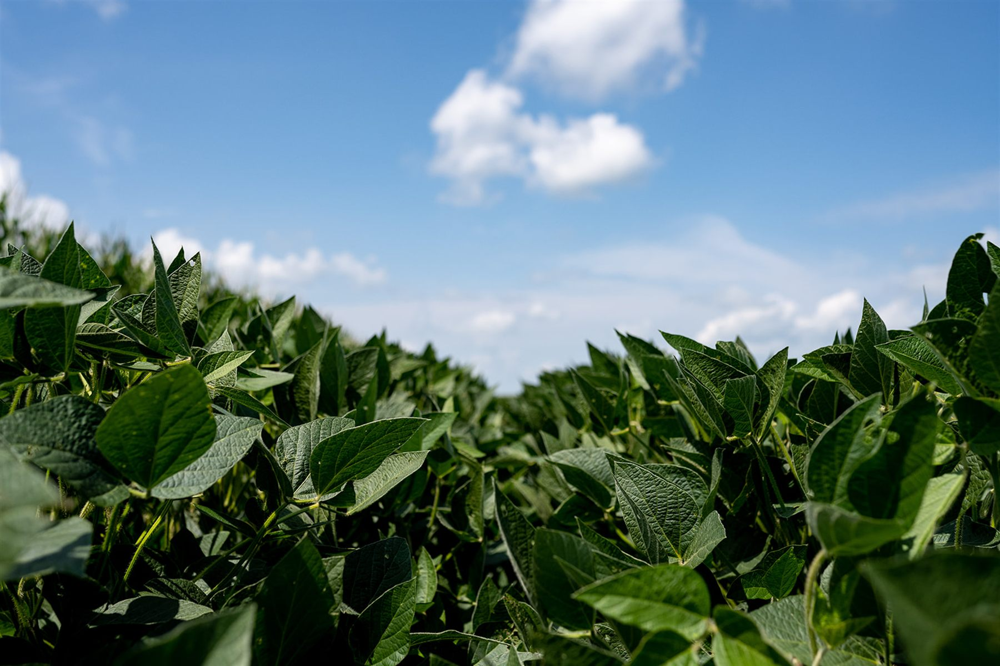
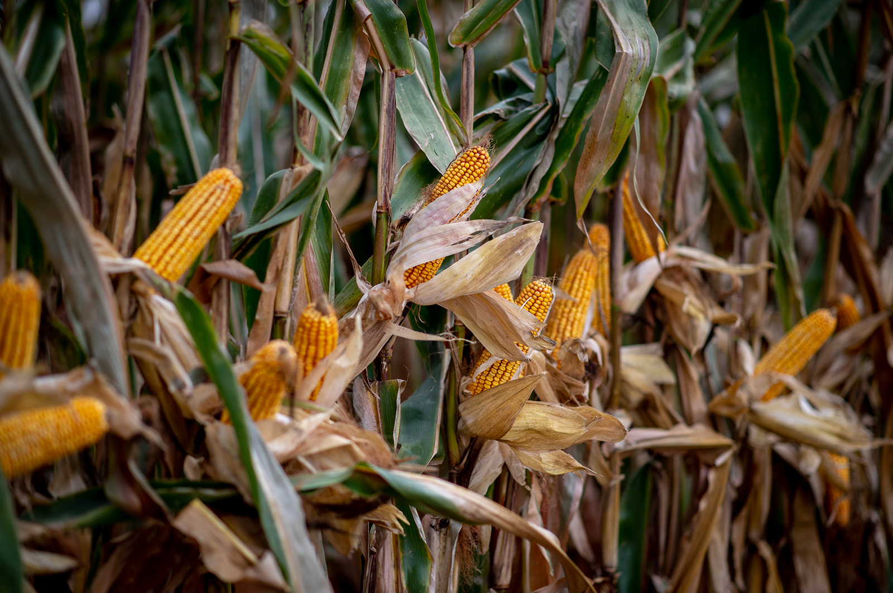
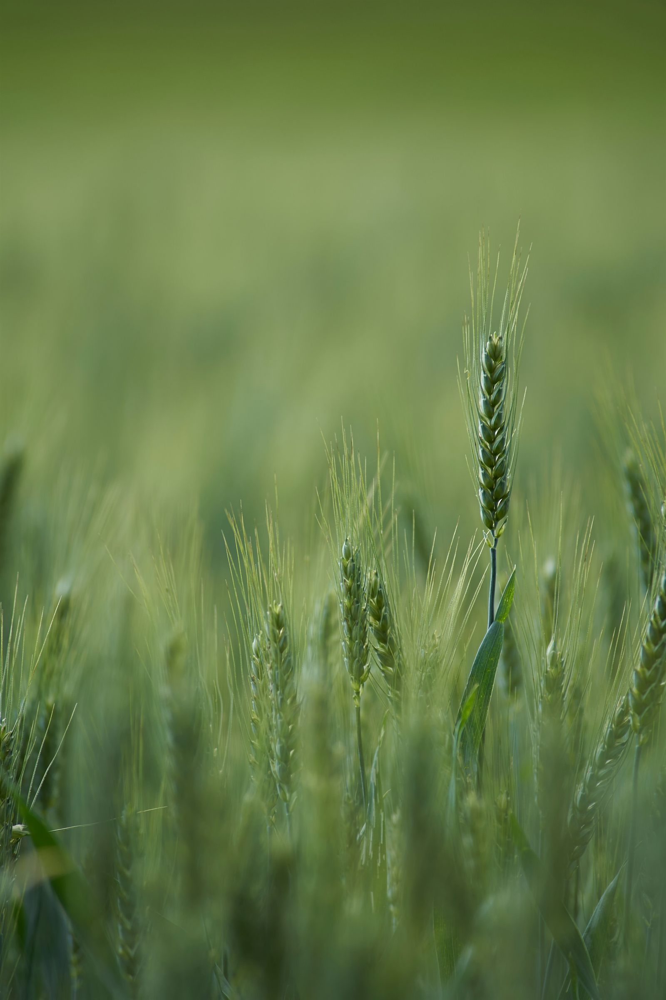
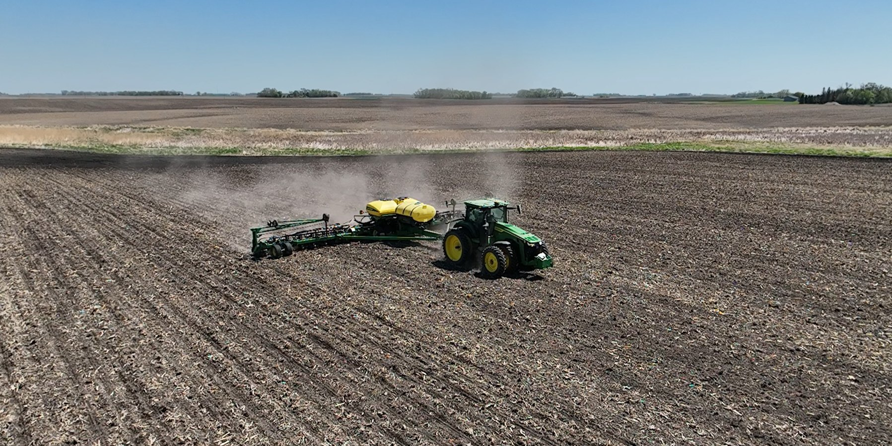
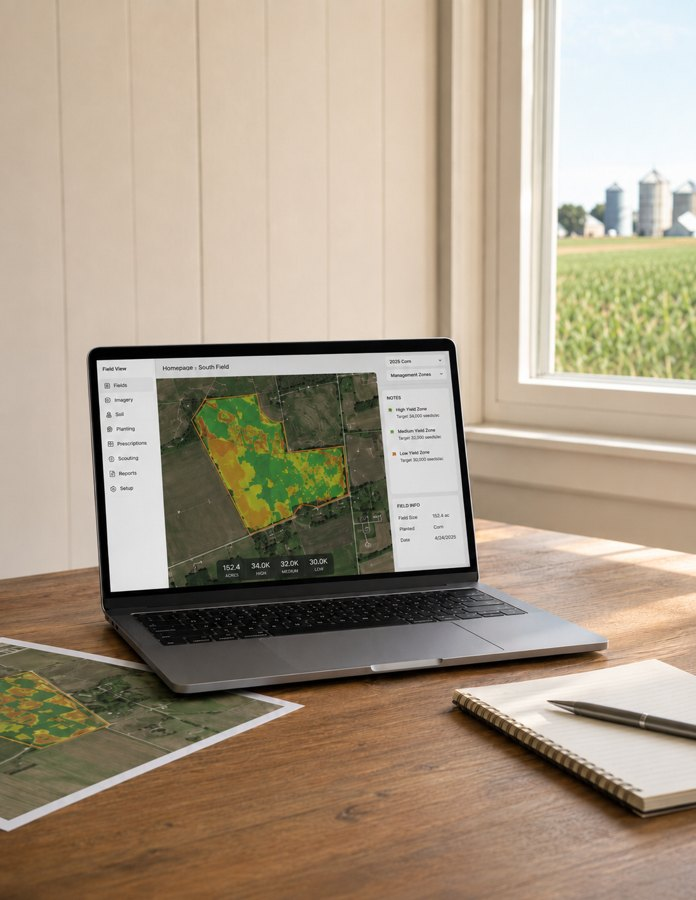

Corn
Corn
Family-owned agricultural support
Trusted by Local Growers for 70 Years
Domnick Seeds provides proven seed, crop inputs, agronomy services, and local expertise to help growers make confident decisions throughout the season.

Family-owned
Serving growers since 1956
Local seed and agronomy support built around west-central Minnesota farms.
70 Years of Experience
Family-owned and serving area growers since 1956.
Premier Products
Leading seed, crop inputs, biologicals, and agronomy services.
Local Expertise
Recommendations based on local conditions, practical experience, and each grower's operation.
Local commitment
Family-Owned. Grower-Focused.
For 70 years, Domnick Seeds has worked alongside local growers to provide dependable products, practical recommendations, and personal service. We believe strong relationships are built by being available, following through, and treating every farm as if it were our own.

Products and services
Premier products backed by practical local support.
From DEKALB corn and Asgrow soybeans to crop nutrition, biologicals, sampling, and prescriptions, Domnick Seeds helps match products and services to each acre.
Corn

SoybeansVarieties matched to maturity, soil type, and weed pressure.

Bio-FertilityBiological and fertility tools that support crop health and yield goals.

Cover cropsBlends that support soil structure, residue, and rotation goals.
Services
Advice that stays useful after the sale.

01Seed placement
Match products to soil, drainage, rotation, disease history, and yield goals.

02Season planning
Talk through acres, timing, treatment needs, and delivery windows early.
03
Field follow up
Keep an eye on emergence, stand quality, and product performance.
Next step
Let's Plan for a Successful Season
Whether you are selecting seed, reviewing crop inputs, or looking for better agronomic information, our team is ready to help.
From the field
Built around real acres, real seasons, and practical decisions.


Contact
Ready to talk seed?
Reach out to Domnick Seeds to talk through seed, crop nutrition, sampling, spraying, scripting, or chemistry needs for the season.
Call: 320-589-4021
matt@domnickseeds.com
26312 500th Ave, Morris, MN 56267
Serving local growers from planning to harvest